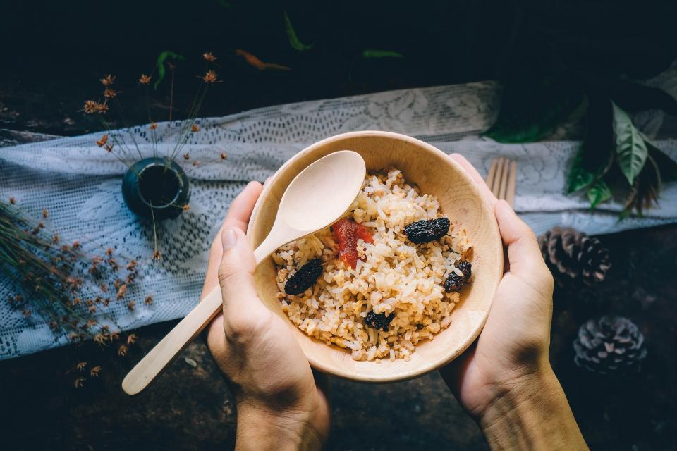
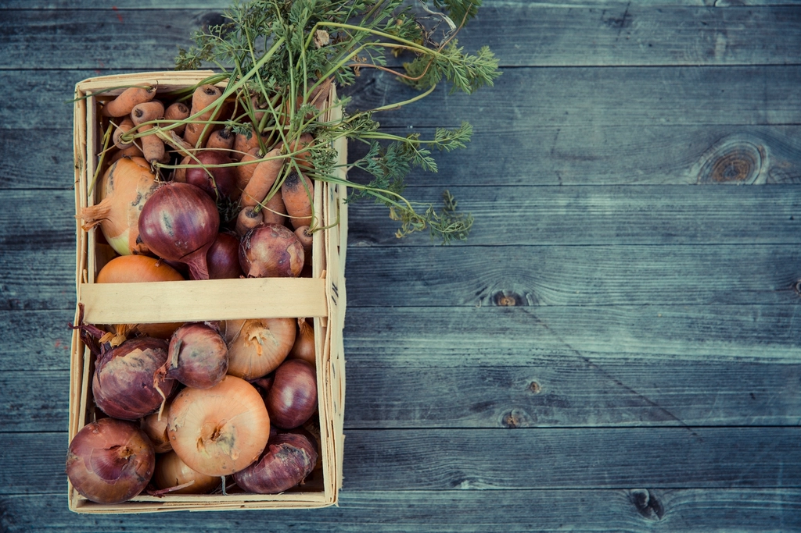
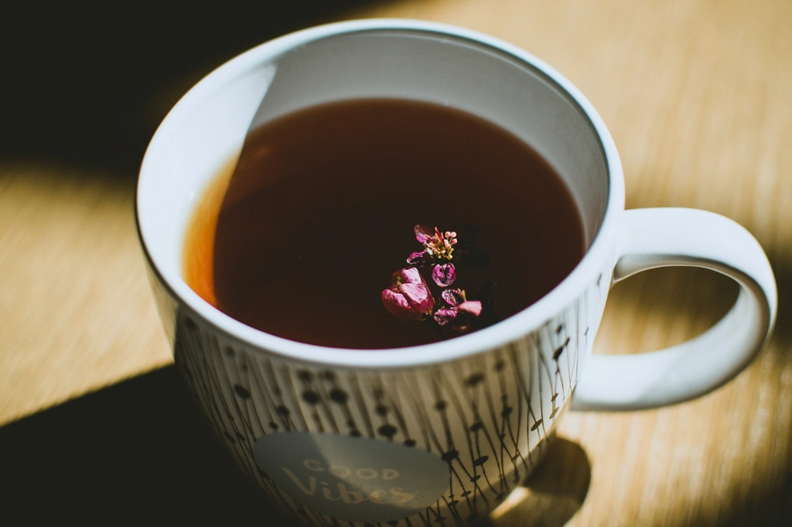

からだにやさしい、
ここの食卓
玄米ごはんと季節の野菜を中心に、からだにやさしい献立をご用意しています。品目・価格は季節や仕入れ状況により変わりますので、最新情報はお電話またはInstagramにてご確認ください。

01
玄米ごはんの定食
玄米ごはんを主役に、季節の野菜を使ったおかずと汁物を組み合わせた献立です。かみしめるほどに味わい深い玄米と、からだにやさしいおかずの組み合わせをお楽しみいただけます。

02
野菜のおかず・副菜
野菜そのものの味を活かした、優しい味付けの副菜をご用意しています。季節ごとに表情を変える野菜の彩りも、食卓の楽しみのひとつです。
03
汁物・発酵食品
具だくさんの汁物や、発酵食品を取り入れた一品をお付けしています。あたたかい汁物で、食事のはじまりをやさしく整えます。

04
飲み物・自然派ドリンク
ハーブティーなど、からだにやさしい飲み物もご用意しています。食後のひとときを、ゆっくりとお過ごしください。
メニュー内容・価格は仕入れ状況や季節により変動いたします。最新情報はお電話またはInstagramにてご確認ください。